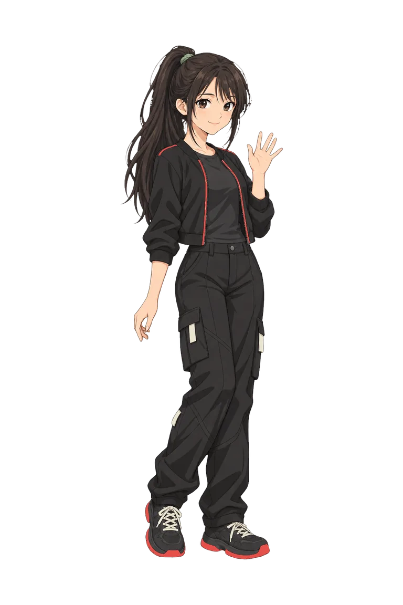

Open source · MIT
v0.1
hi, i'm neo_
An open-source personal AI that grows with you.
-
No chats, just one story
NEO keeps one continuous timeline with you, like a person would, and picks up where you left off. Go off the record any time.
-
Memory that works like yours
It remembers what matters on its own, is reminded of related things, and lets the rest fade.
-
A personality that grows
No name or tone settings. NEO learns how you like to talk by talking with you. You only choose its face.

Choose NEO's look